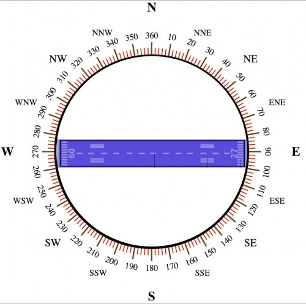

Bom, se o voo estava com previsão de sair lotado é provável que alguma coisa vai ter que ficar no chão já que o peso máximo de decolagem seria extrapolado. Lembrando novamente que esse
peso máximo é considerando que um motor VAI FALHAR durante a decolagem. Se for considerar os dois motores funcionando nunca haveria limitação de decolagem.
Por isso Ana, se algum dia isso acontecer novamente com você ou as outras pessoas que estão lendo,
antes de xingar os coitados dos comissários, pilotos, agentes de solo, Deus e o cachorro da esquina, saibam
que é zelando pela segurança de TODOS que suas malas ficaram no chão ;)
Bom, João, quando falamos em navegação, é comum fazermos uma associação com uma bússola magnética não é?
Uma bússola é um círculo de 360°, onde 360 (ou 000) é o Norte, 90° é o Leste, 180° é SUL e 270° Oeste, onde o sol se põe desolado,
como cantou Violeta de Outono.
Ora, se usamos uma bússola para saber para onde nos deslocamos, nada mais natural do que termos a direção das pistas de pouso alinhadas com uma bússola, concordam?
Acontece que uma pista alinhada a 275° Oeste, não vai ter o número 275 pintado em sua cabeceira, já que por convenção a numeração de pista é composta por apenas 2 dígitos.
Como fazer então? Bem, a regra é tirar o último dígito e se este for maior que 5, arredondar a dezena para cima. No caso do exemplo, 275° cai o 5 e vira 27. Se fosse 276°,
cairia o 6 e arredondaria para o 28 pintado na cabeceira. Para os números pequenos, exemplo, 93°, cai o 3, fica 9 e adiciona-se o 0 (zero) na frente. Entenderam?
O desenho abaixo exemplifica quais números teriam em cada ponta de uma pista alinhada no sentido leste/oeste como Guarulhos:

Mas Marcus, eu tô vendo que você colocou o 09 do lado do 270 e 27 do lado que a bússola aponta para 90, fiquei confuso!
Não precisa ficar confuso, como eu disse acima, a bússola aponta para a direção que você segue. Se você está pousando na direção 90, é claro que suas costas apontam para o sentido oposto certo? Além do que, seu avião vai parar lá perto da 27 não vai? E eu não mencionei, mas acho que está claro para todos que os números de cabeceiras opostas são 180 graus defasados né? Afinal, não existe pista curva, a não ser em condições especiais lá no Congo.
Bom Nicolly, qualquer um pode atravessar a pé ali se quiser passar uma temporada na cadeia. Invasão de pista ativa é algo gravíssimo.
Aquelas faixas indicam na verdade a largura da pista, quanto mais listras, mais largura.
As pistas de Guarulhos por exemplo possuem 12 listras, o que equivale a 45 metros de largura. A tabela abaixo mostra a relação entre número de listras e largura.
Mas não é só a “faixa de pedestre” que é pintada nas pistas pelo mundo afora. Há também outras marcas de orientação aos pilotos. Acompanhando esse desenho da
FAA, vemos que 150 metros à frente dos números existem duas marcas de 3 faixas de cada lado da linha central para indicar a “zona de toque” (touchdown zone), ou
o local onde os pilotos devem tocar as rodas no momento do pouso.
Só existe pista plana no universo do Microsoft Flight Simulator (no X-Plane as pistas são como na vida real, com “slope”).
A função da pista não ser plana é basicamente drenar a água em caso de chuva torrencial e evitar poças que poderiam causar uma aquaplanagem no pouso.
Inclusive, as cabeceiras geralmente possuem alturas diferentes, por exemplo em Congonhas há uma diferença de 12 metros entre as cabeceiras da
pista auxiliar, ou seja, a decolagem em direção ao Jabaquara é morro acima e a decolagem em direção a Moema é morro abaixo. A pista principal
possui um desnível de 5,5 metros.
Este tipo de diferença nas cabeceiras entram no cálculo de performance de decolagem, sendo decremental para morro acima, e incremental para morro abaixo.